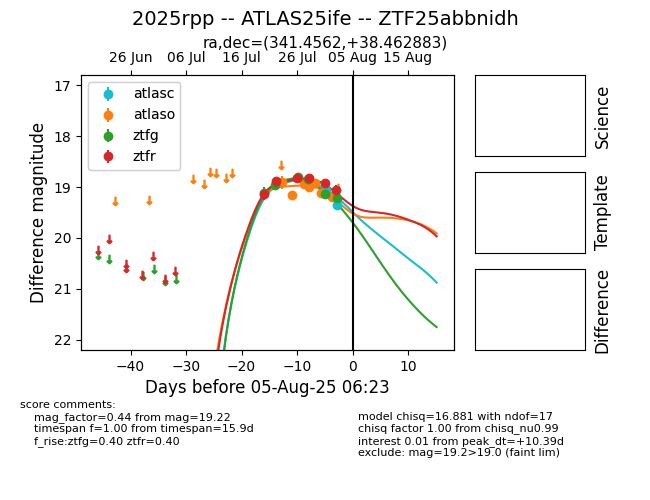

Target 2025rpp at 2025-08-05 07:33, see:
FINK: fink-portal.org/2025rpp
Lasair: lasair-ztf.lsst.ac.uk/objects/2025rpp
ALeRCE: alerce.online/object/2025rpp
TNS: wis-tns.org/object/2025rpp
YSE: ziggy.ucolick.org/yse/transient_detail/2025rpp
alt names
ZTF25abbnidh (ztf,fink)
2025rpp (tns,yse)
ATLAS25ife (atlas)
coordinates:
equatorial (ra, dec) = (341.4562,+38.46288)
galactic (l, b) = (97.5083,-18.12966)
photometry
last atlasc=19.35, atlaso=19.19, ztfg=19.22, ztfr=19.06
2 atlasc, 8 atlaso, 6 ztfg, 6 ztfr detections
